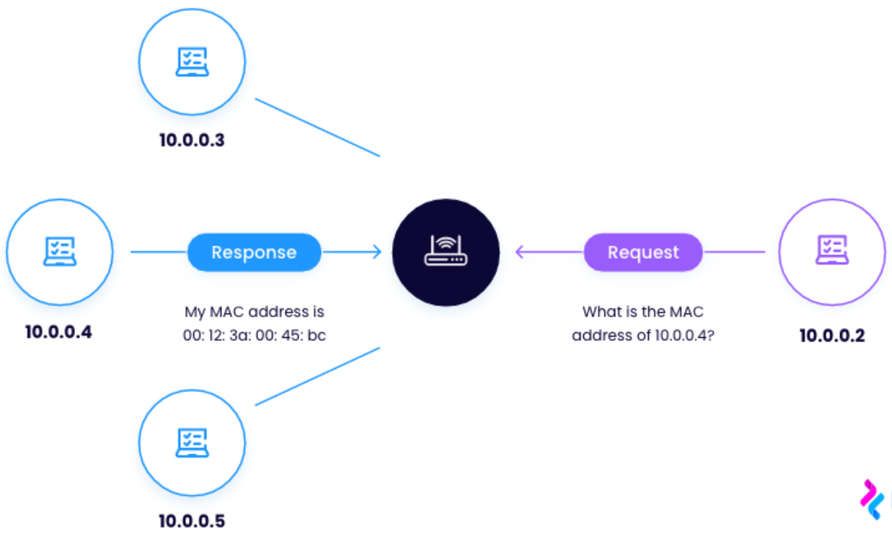

ARP "Address Resolution Protocol" is the protocol used to discover the MAC address of a known IP address.
PC1 wants to communicate with PC2, it typically would use PC2's IP address as a destination, however, it might not know its MAC address. (example scenario: ping [PC2's IP address])PC1 and PC2 were inside a LAN, PC1 would need to discover PC2's MAC address, because inside a LAN means separated by a layer 2 device like a switch, which are unable to operate using IP addresses and they need to know the MAC address of the destination.192.168.1.3"192.168.1.3, here's my MAC address …"
When a broadcast message is sent, the destination MAC address would be FFFF.FFFF.FFFF

Note that after a device receives the ARP reply, it keeps the IP address and the corresponding MAC address in its ARP table.
Previous NextTip: To view the ARP table, use the command
arp -a
“Dynamic” means that our device learned the IP and MAC addresses using an ARP request.
“Static” means that the IP and MAC addresses are a default entry on our device.